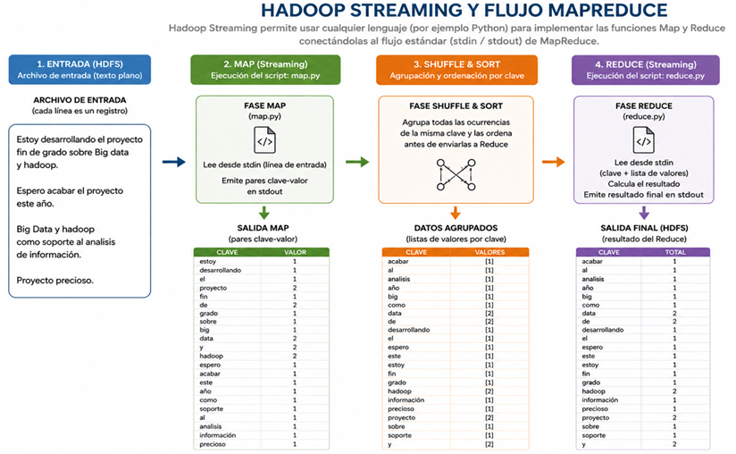

Capítulo 3. Ecosistema de Hadoop
Estructura de Hadoop
Estructura de Hadoop
Hadoop Streaming es una utilidad del ecosistema Apache Hadoop que permite desarrollar aplicaciones MapReduce utilizando cualquier lenguaje de programación capaz de leer datos desde la entrada estándar (stdin) y escribir resultados en la salida estándar (stdout).
Tradicionalmente, las aplicaciones MapReduce debían desarrollarse en Java, el lenguaje nativo de Hadoop. Hadoop Streaming elimina esta limitación permitiendo ejecutar programas externos como procesos Mapper y Reducer.
Durante la ejecución, Hadoop proporciona automáticamente los datos de entrada a los programas mediante la entrada estándar (stdin) y recoge los resultados generados a través de la salida estándar (stdout), integrándolos dentro del flujo normal del procesamiento distribuido.

Figura. Funcionamiento de Hadoop Streaming con programas externos.
En este proyecto se utiliza Hadoop Streaming como mecanismo para implementar aplicaciones MapReduce mediante programas desarrollados en Python.
Esta aproximación permite comprender el funcionamiento interno de las fases Map y Reduce, analizar el flujo de datos dentro del clúster Hadoop y desarrollar soluciones Big Data utilizando uno de los lenguajes más empleados actualmente en Ciencia de Datos.
Una aplicación MapReduce basada en Hadoop Streaming puede ejecutarse mediante el siguiente comando:
hadoop jar hadoop-streaming.jar \
-input /entrada.txt \
-output /salida \
-mapper map.py \
-reducer reduce.py

Figura. Flujo de ejecución de una aplicación Hadoop Streaming.
| Paso | Descripción |
|---|---|
| 1 | HDFS divide el archivo de entrada en bloques. |
| 2 | Los Mappers escritos en Python procesan cada bloque. |
| 3 | Hadoop realiza automáticamente la fase Shuffle & Sort. |
| 4 | Los Reducers agregan los resultados finales. |
| 5 | La salida se almacena nuevamente en HDFS. |
Hadoop Streaming constituye una alternativa sencilla y flexible para desarrollar aplicaciones MapReduce. Al permitir la utilización de lenguajes como Python, facilita el aprendizaje del procesamiento distribuido, reduce la complejidad del desarrollo y convierte a Hadoop en una plataforma mucho más accesible para entornos docentes, investigación y prototipado de soluciones Big Data.